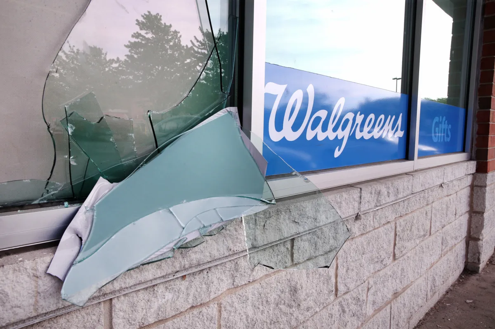

Meet The Neighborhood
The Problem
The Solution
AP Human Geography Project
By Joshua Gumm and Juel Pryor
The Pharmacy Crisis In Chatham

Chicago Tribune: Chris Sweda
Since the Pandemic, Pharmacies have shut down in the Chicago area, but even now after the pandemic the crisis still resides because these pharmacies have not been opened back up, we focus on Chatham because this problem is very prevalent in the neighborhood.
 Community Profile: Chatham
Community Profile: Chatham
This data right here was one of the reasons for me and my partner to choose Chatham, for our plan to build a Pharmacy, because looking at this data, they need another one badly. Their life expectancy is lower than the city average and the reasons for death in their neighborhood can be battled with medication like the heart issues diabetes and things like that can be helped with medication provided by Pharmacies but if the neighborhood only has 2 then it would make sense why their neighborhood is dying quicker than others.
 CMAP Illinois
CMAP Illinois
This evidence is even more reason for why we chose Chatham the percentage of residents with no vehicle available is higher than the city average which corresponds with them having lower income, lower life expectancy, and lower college education rates.
 Best Neighborhood
Best Neighborhood
This photo connects to the previous one you just read, by showing that residents in the areas that aren't as close to pharmacies are the lowest income areas, and since they have little to no income it would stand to reason that they are the residents who most likely are the ones that have no vehicle available, which is another reason for why we wanted to build a pharmacy in Chatham, so that residents in the area will have one in walking distance and solve the pharmacy crisis in their neighborhood.
 Community Profile: Chatham
Community Profile: Chatham
Lastly another main point for us choosing Chatham for building our new pharmacy is that as you can see in the data photographed above, that majority of the residents in Chatham are in the 45-64 and 05-14 range and those are the ages that need medication the most when it comes to health problems like adults getting older and developing health issues and with kids having naturally weaker immune systems because their so young.
Back To The Top